First, the installation
1/ Open Eclipse (tested on Indigo)
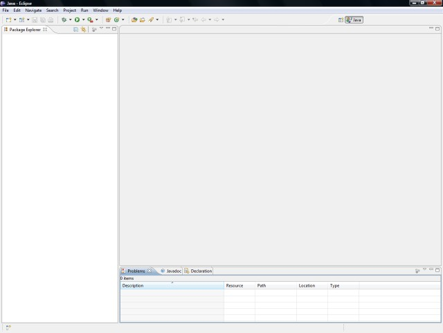
2/ Go to "Help" and then "Install New Software…"
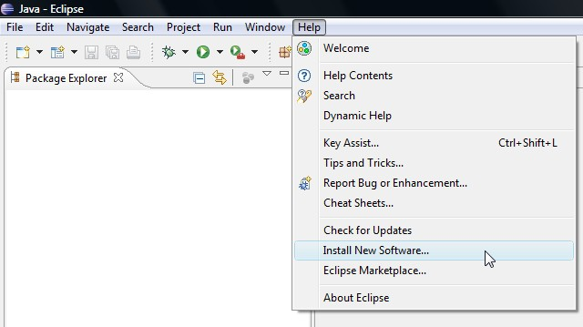
3/ Click "Add…" to add a new repository. The location is "http://iuscl.org/update"
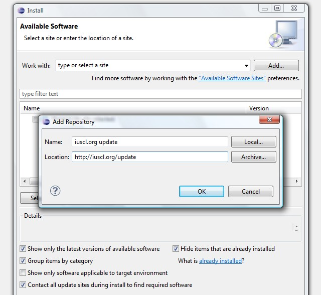
4/ Select "IusCL IDE", click "Next"
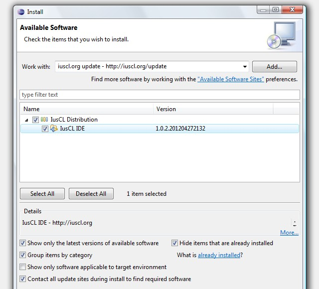
5/ Select the feature, click "Next"
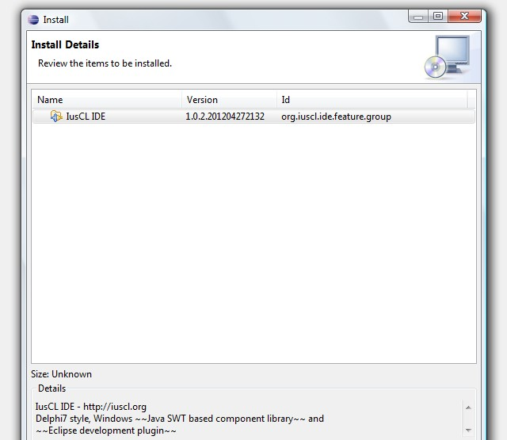
6/ Accept the license, click "Finish"
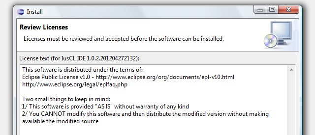
7/ Click "OK" to install unsigned
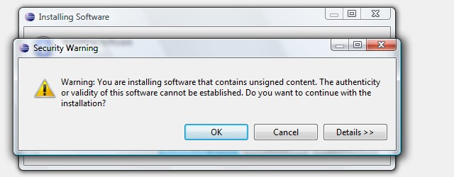
8/ Restart Eclipse
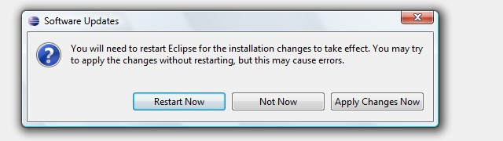
9/ After restart, verify that the plugin is there, "Help" menu and then "About Eclipse"
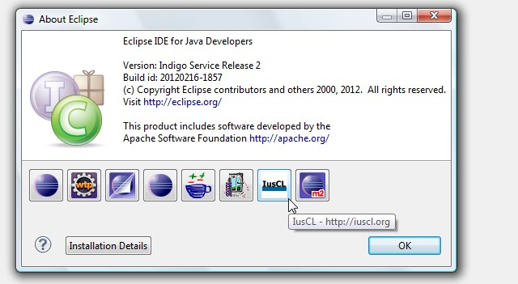
10/ And that is the correct version
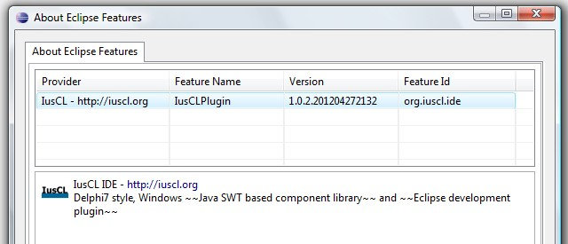
11/ Click the perspectives button, and select the "IusCL IDE" perspective

12/ If the following perspective appears, the installation is successful
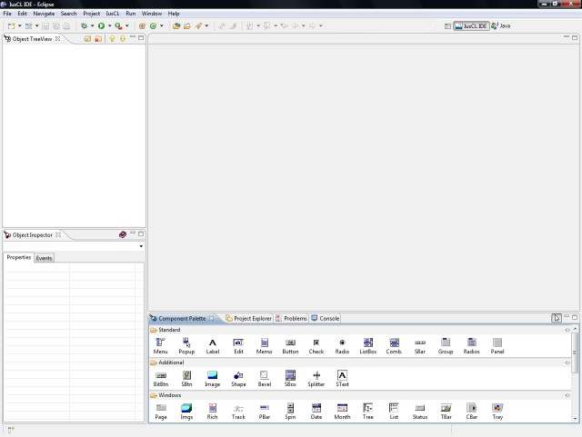
Now, let's verify it:
1/ Go to "File", "New", "Other…" and select "IusCL Application"
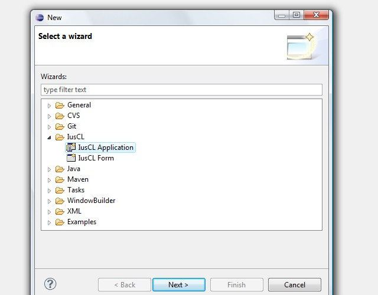
2/ Name the project "ExampleProject" (just to be sure verify and create the project location folder, default "C:\IusCL_Applications")
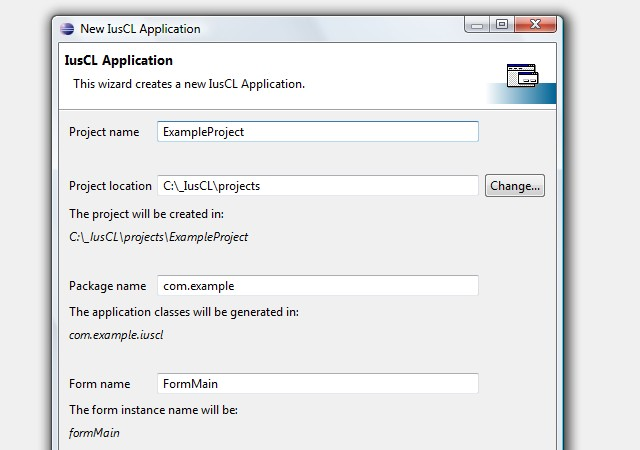
3/ Click "Finish" and wait until the main form appears in the perspective
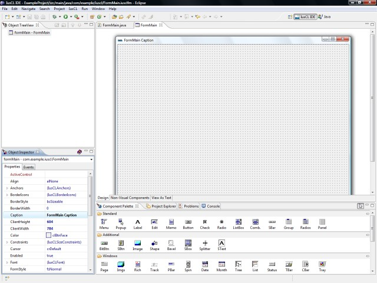
4/ Go to "Project Explorer", and select "ExampleProject.launch"
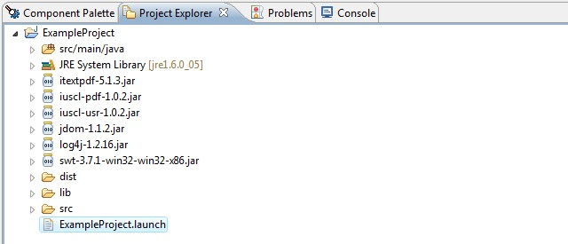
5/ Right click it, select "Run As", and then "ExampleProject"
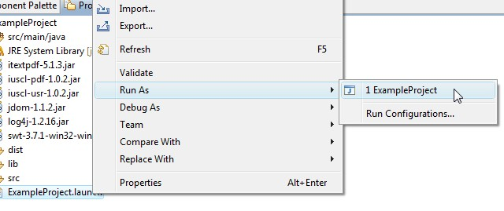
6/ The application should start
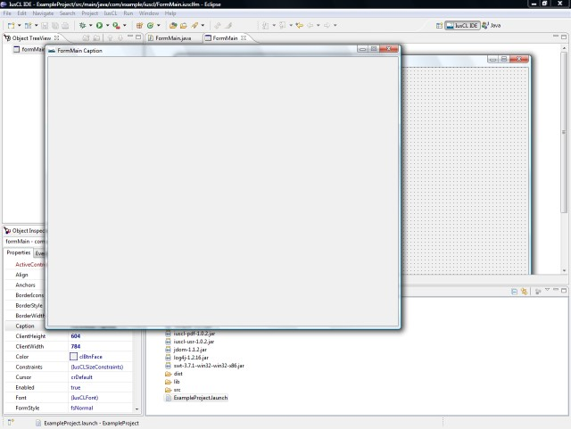
7/ Go to "Component Palette", select "Button"
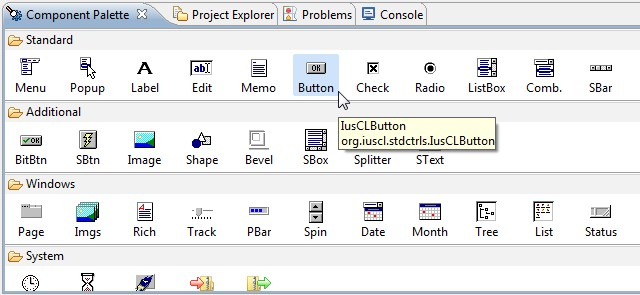
8/ Click the form where you want the button to be, the button will be put on the form and also declared in code
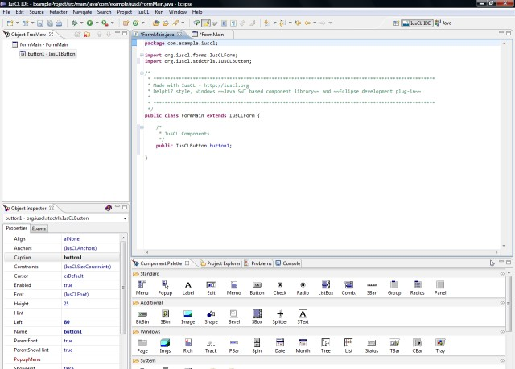
9/ Go back to the form editor and double click the button
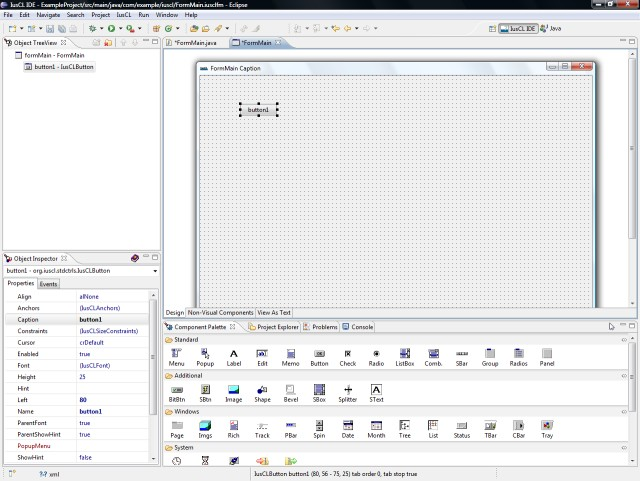
10/ Inside the created event function, write "IusCLDialogs", code completion should be functional
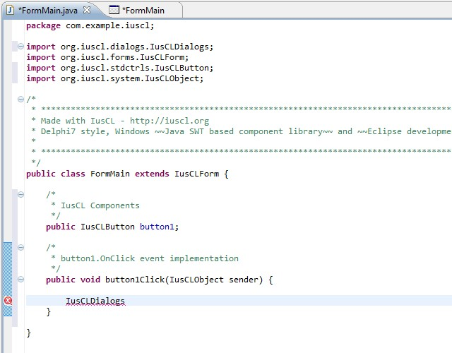
11/ Chose "showMessage"
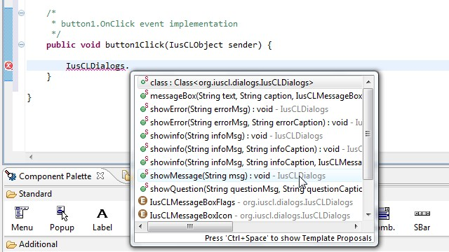
12/ Put "Hello World" as message
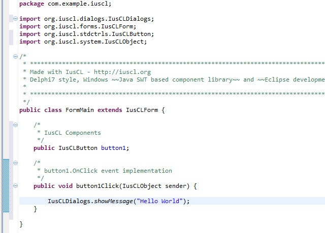
13/ Save all, and then launch the application. From now on it can be launched from the Eclipse toolbar
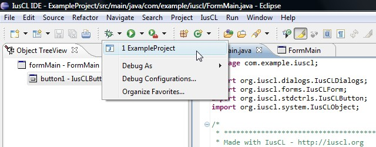
14/ Click on the button, and the message should appear
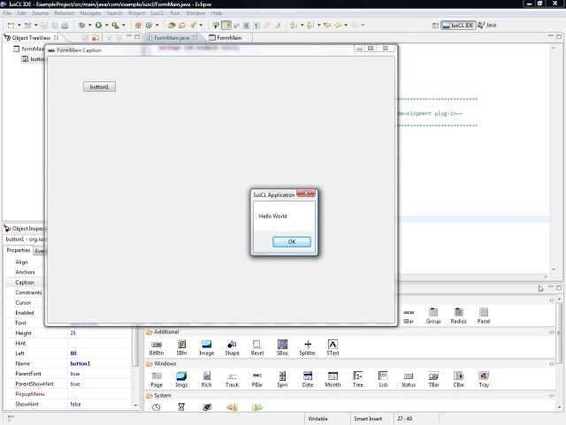
That's it, IusCL is installed and verified